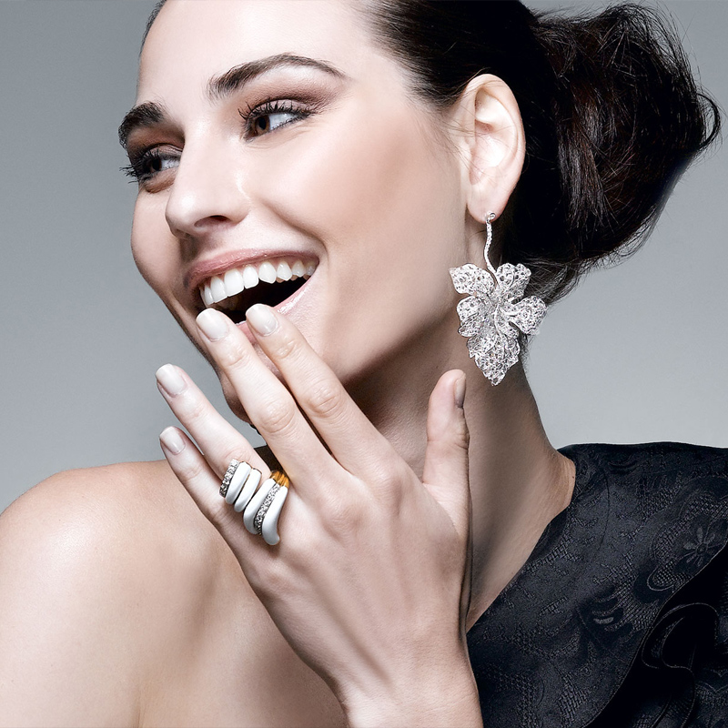

邂逅宝石
每一个新潮女性在追求流行的同时，都不想成为时装的奴隶,同时也不应被首饰所束缚。最简单,最有效的办法是在你的衣柜里寻找新的组合,在你的首饰盒中用你的想象力去尽情搭配,充分体现个性和流行，展现新的自我。蝴蝶结在复古的同时又注入了新的时尚元素，如果你仔细观察的话会发现，细节上的变化才是它们最大的特点。应该说每个女人都是有公主情结的，蝴蝶结这个简单的装饰，最大限度地满足了许多平常女子的公主情结。小时候的蝴蝶结多是出现在头发、领口和腰带上的，中规中矩地位于中央，打扮出经典的小公主形象。而今年无论是上衣，还是裙子上的蝴蝶结，都不再是经典的居中型。上衣上的蝴蝶结，不再是一个简单的结，而是丝带从两侧开始在偏左的四分之一处成结。蝴蝶结的形状既有经典的大蝴蝶，也有简单对叠的小蝴蝶，大的华丽飘逸，小的简约优雅，各有意趣，都令人爱不释手。除了衣服之外，今年鞋子上的蝴蝶结也是大出风头。或是配合今年的包脚凉鞋偏居一侧，或缀于鞋头，或居于脚后，有的干脆是在透明的鞋底里也印上蝴蝶。即使是有些休闲款的鞋子，也因为蝴蝶结的添加而多了些优雅的感觉，在端庄中透着每个女人心底的浪漫情怀。有时尚专家认为，穿蝴蝶结装饰的凉鞋，能够使女性的脚踝显得更加纤细。以往的蝴蝶结往往根据衣服和鞋子的不同材质而变化，但今年不论主体的材质如何，大部分的蝴蝶结都是丝缎的，精良的材质让蝴蝶结的优雅感进一步得以凸现。这些变化看上去都不大，最神奇的就是这些细节的改变令蝴蝶结焕发出以往无法企及的优雅。
每位真正懂得流行，具有判断力的人，她所穿的衣服大多是属於传统式的服装，但是，在装饰和各种配件上，却极尽采纳了流行的意味，时髦对於她来说，只是轻而易举的搭配各种配件罢了。一个巧妙的配件，可成为衣着的焦点，可使简单的衣服或素色的衣服，平添无限的光彩。
若无意间在街上发现精巧可爱的饰物，虽然一时还用不着，却又爱不释手，那麽还是带回家吧!它很快就能派上用场的。配件的种类极多，让我们从头说起吧!
耳环
天然水晶耳坠
是最常戴的饰物之一。它的形状有千百种，但是有一个原则要记住，那就是大型脸戴大耳环，小型脸戴小耳环。其次为耳环的颜色需与衣服相配合，同色系的搭配最保险。但穿素色衣服时，耳环可与腰带、皮包和皮鞋共同搭配成对比色